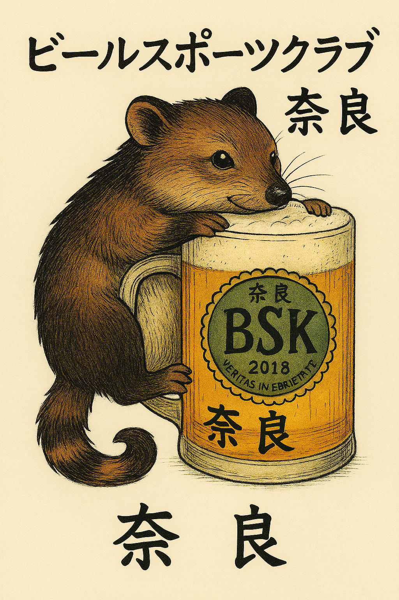

Skip to main content

Technik / Innovation / Forschung
🏠
⚙
🔑
Signup
?
Schwerpunkte
Bionik-Systeme für vernetzte regionale Bewegungen
Berner Studio für visionäre robotische Begleiter (z. B. Aarulon, Mechafisch)
Baukasten-System für variable, regionale Beteiligung
Projekte kennenlernen
Mechafisch & Smart-Float – Mechanik, Sensorik und Signale
Aarulon / Aari – Sprache, Gedächtnis und Austausch
Tragmi – Projektförderung und Sponsoring